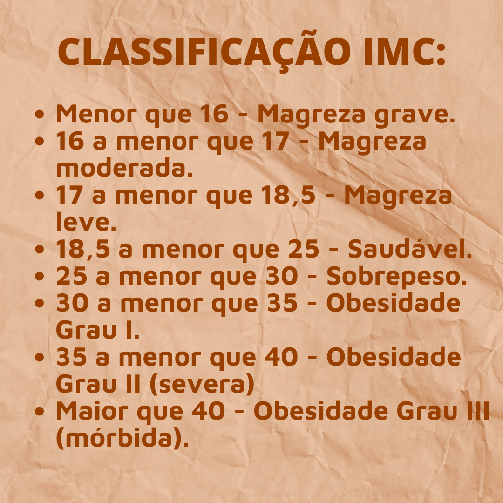

Índice de Massa Corporal:
Antes de começar, te aconselho calcular seu Índice de Massa Corporal (IMC), que é um cálculo simples que permite medir se alguém está ou não com o peso ideal. Ele é muito útil para pessoas que tem ideia de iniciar uma dieta específica ou uma atividade física. O número final representa o quanto a pessoa tem de massa muscular + massa de gordura + massa óssea.
Com o resultado dele, você pode traduzi-lo e ver com um profissional o que precisa mudar.
Resultado:
Você se exercita?
A prática regular de exercícios físicos envolve muito mais do que estética. Ela contribui para o bem-estar físico, saúde mental, bom funcionamento do coração, circulação sanguínea, da respiração e até mesmo dos hormônios.
Porém, eu entendo que muita gente está aqui por conta da estética, então o blog é mais voltado para isso, mas, mesmo assim, não quero deixar você esquecer que a saúde vale MUITO mais.
Mesmo sabendo de todos os benefícios do exercício físico, nem sempre é fácil ter disciplina para manter uma prática regular de atividades, ao menos 3 vezes na semana.
Então, eu to aqui pra te falar que, se você não for atrás, você não vai conseguir, porque isso não depende de NINGUÉM além de você mesmo (a). Faça sua parte, nem que seja um pequeno passo, melhore 1% a cada dia e vá aos poucos pois daqui a um ano, você vai se agradecer por ter começado hoje, por ter dado seus passos hoje e por não ter desistido.
SEM PREGUIÇA, COM DISCIPLINA E PRINCIPALMENTE COM CONSTÂNCIA, acredite no seu potencial e acredite que você consegue, porque VOCÊ CONSEGUE!
NÃO É FÁCIL.
Infelizmente, não estou aqui para te ensinar uma fórmula mágica pra ter o corpo perfeito. Estou aqui para te ajudar e dizer que NÃO, NÃO É FÁCIL.
DESISTIR NÃO VAI ACELERAR O PROCESSO. NÃO PARE! Se mantenha em movimento, não tem segredo. Você VAI chegar lá uma hora, o pequeno passo que você da dia após dia vai te fazer chegar lá!
por mais difícil que seja, não desista e tenha paciência, desistir NÃO acelera o processo, pelo contrário, isso só te impede de chegar lá.
Como se manter uma pessoa motivada?
- Célebre as pequenas vitórias : pode parecer clichê, mas quando você vê que pode e vê que conseguiu realizar uma pequena parte de um todo, você sabe que, aos poucos, vai chegar lá.
- Tenha inspirações diárias : ter contato todo dia com coisas que te fazem querer sair do sofá e ir atrás do que você quer com certeza é MUITO importante, então siga quem te inspira.
- Faça por você! Se você não for atrás dos seus objetivos, quem vai?? As pessoas podem te incentivar e te colocar pra cima, mas a única pessoa que pode fazer é você, então FAÇA!